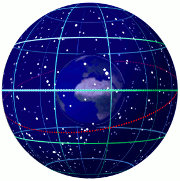

Chapter 1: The celestial sphere and coordinate systems
Celestial Sphere
Heavenly Spheres
PQ: Longitudinal Distances
The radius of Earth is $R_E=6378.1$km. What is the physical distance between two meridians separated by $1^\circ$ at the following latitudes?
|

|
Altitude-Azimuth Coordinates

Theodolite
Measure angles from visible points.Stellarium
Equatorial Coordinates
Ecliptic
Path of the Sun on Celestial SphereEcliptic from Earth's View
Celestial Sphere Appearance

Views of the Celestial Sphere
Celestial Sphere Motion
Galactic Coordinates

Transit Telescope Markings